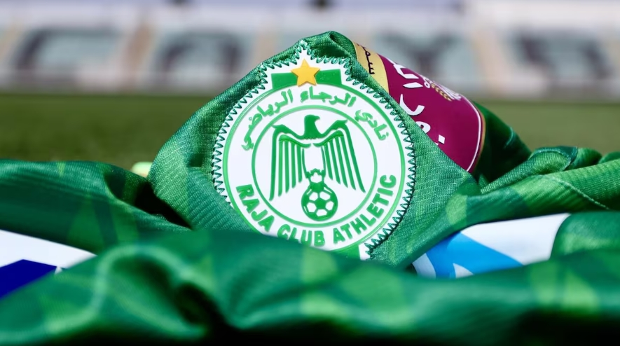
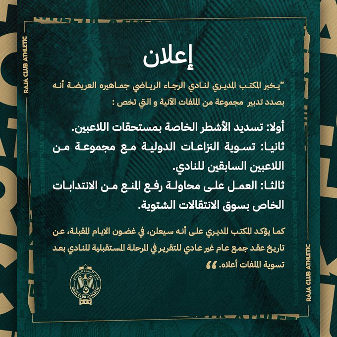

publié le: 18/01/2025
Raja: le bureau directeur tente de redresser la barre

Traversant période compliquée en ce début saison, le bureau directeur du RCA est en train de gérer plusieurs dossiers liés aux dus des joueurs, aux litiges avec les anciens, et se prépare à lever l’interdiction de recruter lors de ce mercato hivernal.
Le bureau du Raja de Casablanca a informé, hier vendredi 17 janvier, dans un communiqué publié diffusé sur ses réseaux sociaux, qu’il travaille sur plusieurs dossiers, notamment le règlement des impayés des joueurs, la résolution des litiges internationaux impliquant plusieurs anciens du club, ainsi que les démarches visant à lever l’interdiction de recrutement imposé durant cette période de transfert hivernal.
Le même communiqué a également précisé que le comité directeur annoncera, dans les prochains jours, la date de la tenue d’une assemblée générale extraordinaire, qui permettra de décider de l’avenir du club une fois ces dossiers réglés.

Par ailleurs, les Aigles Verts occupent la 8e position du classement de Botola Pro Inwi avec 23 points et deux matchs en retard. En Ligue des Champions, ils sont troisièmes du groupe B avec 5 points et devront battre l’AS Maniema Union tout en attendant le résultat de l’autre rencontre opposant l’AS FAR à Mamelodi Sundowns pour espérer voir les quarts de finale.